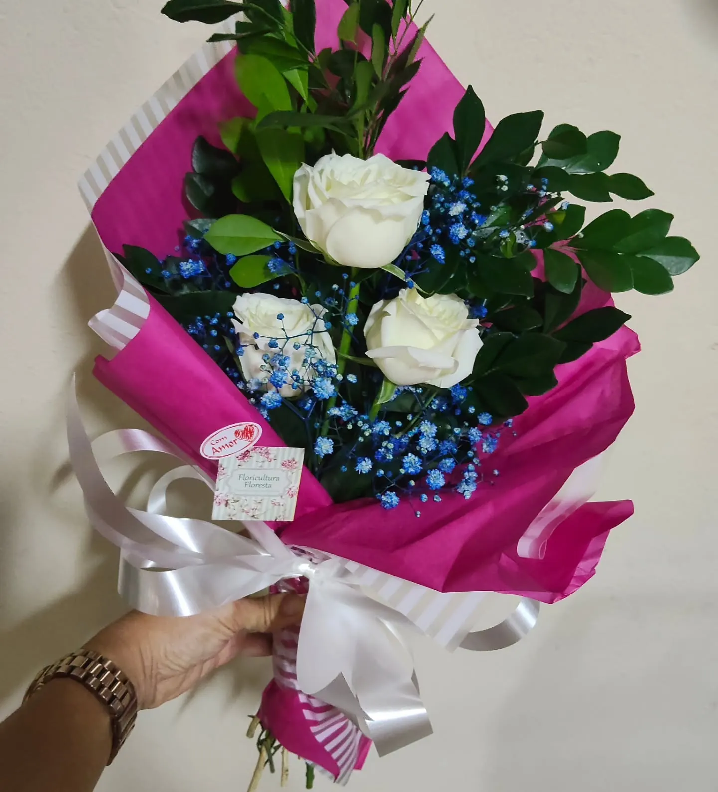
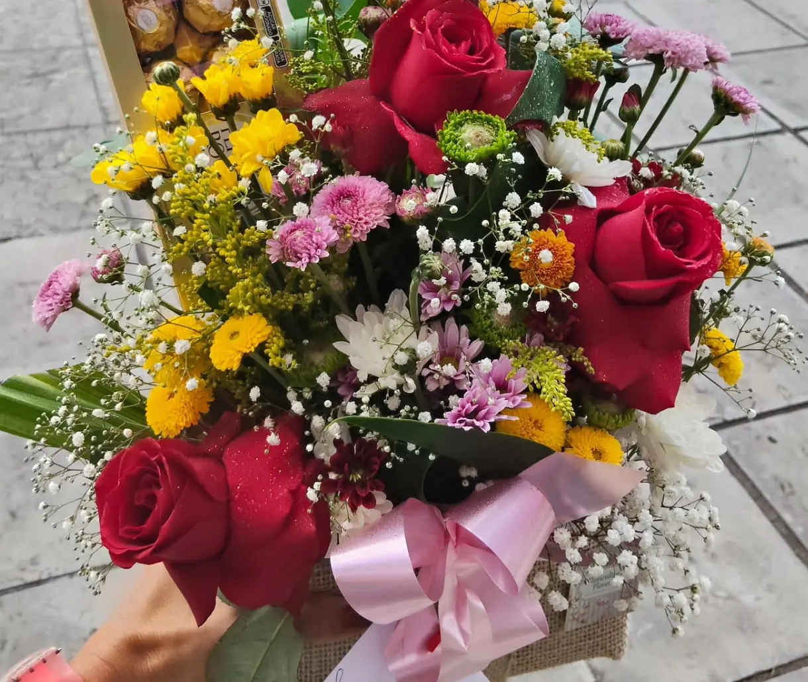
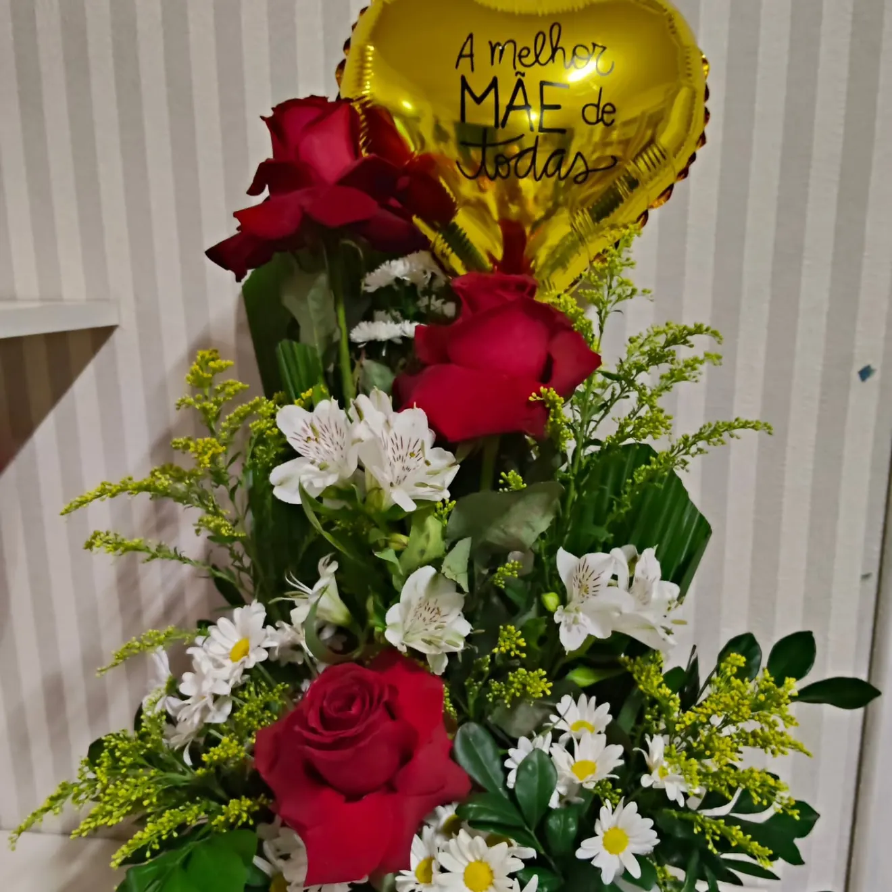
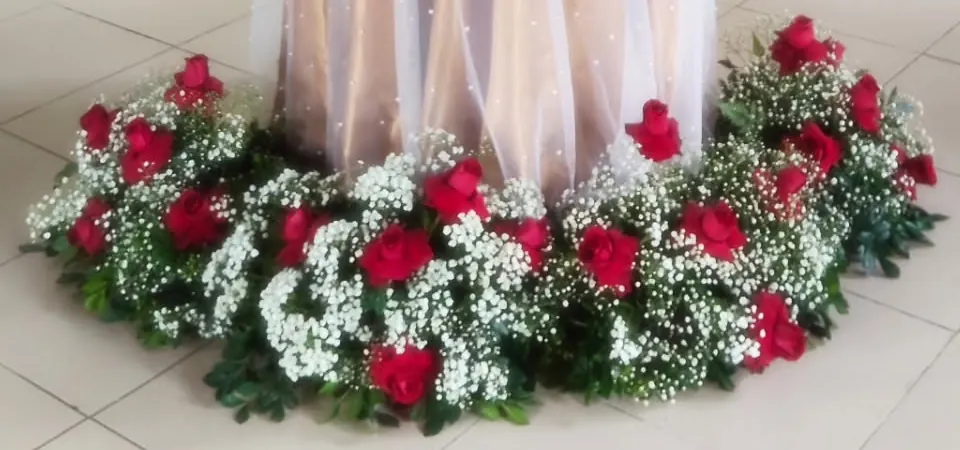

Buquês e cestas de café, com entrega em Joinville
Diga pelo WhatsApp o que quer mandar e para quem. A Floricultura Floresta cuida do resto.

Um buquê para cada recado
Pode ser uma rosa só, um mini buquê, girassóis ou um mix de flores. Com chocolate, pelúcia ou balão, se quiser.

Cestas de café
Conte para quem é a cesta e do que a pessoa gosta. A loja monta a sua.
Pedir uma cestaCesta de café
Cesta com pelúcia
Cesta personalizada

Entrega em Joinville, sem correria
Tem data marcada? Organize sua entrega e evite a última hora. Combine dia e endereço pelo WhatsApp.
Dia da Mulher, Dia das Mães, Dia dos Pais, Dia da Secretária: a loja prepara flores e presentes para essas datas.

A Floricultura Floresta na China
Em missão empresarial da FIESC, a loja foi buscar inspirações, tendências e novidades para trazer a Joinville.
Para quem vão as flores?
Rua João Pinheiro, 50, Floresta, Joinville. Entregas na cidade.